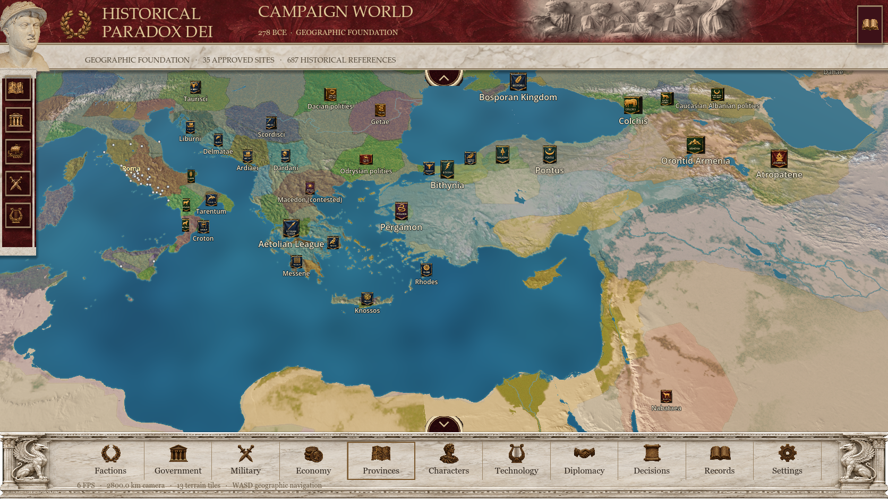

Historical Paradox DEI · visual fidelity pass
Actual game rendering, with functional image-backed controls. The approved reference and final campaign capture are both 1672×941. The map remains the game's own scene; its framing and content differ from the concept.

Final · reference dimensions
Direct comparison
 Approved reference · 1672×941Implemented interface · 1672×941
Approved reference · 1672×941Implemented interface · 1672×941Previous implementation
 Earlier procedural implementation, captured at 1920×1080. Shown for historical comparison, not a matched-camera rendering.
Earlier procedural implementation, captured at 1920×1080. Shown for historical comparison, not a matched-camera rendering.
Remaining differences: the source sculpture and relief, generated architectural carvings and installed fonts differ from the exact concept artwork. Unsupported resource counters are omitted; actual geographic counts occupy the register. The existing map is preserved.
Implementation, changed files, validation and limitations · Artwork attribution and licensing · Generation prompts · Native UI results · Asset audit